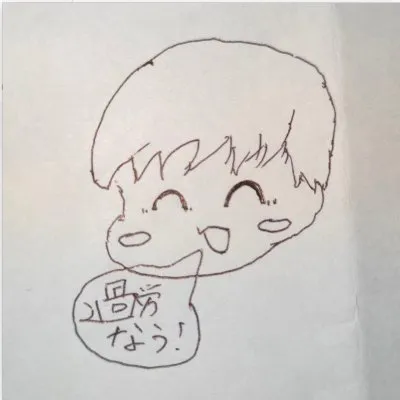
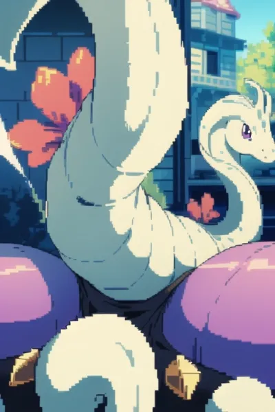
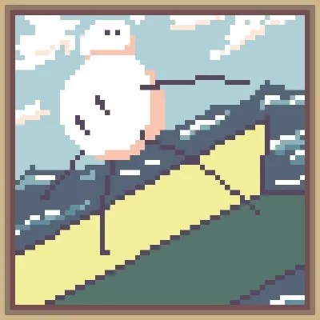
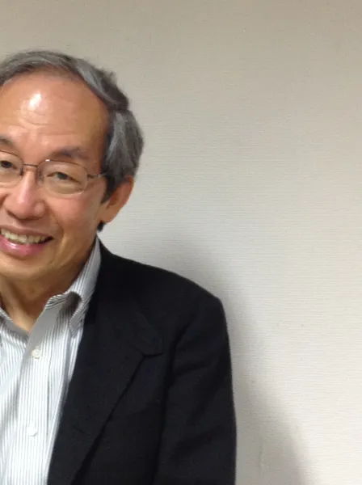
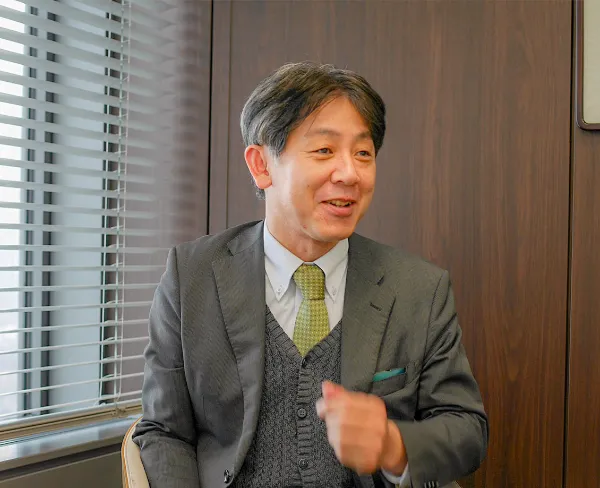
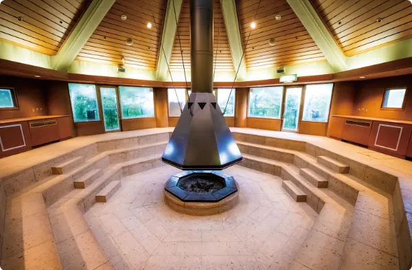

研究室を飛び出して学際的に学び合う
Studemiaとは、研究活動を行っている学生を中心に集まり、各自が行っている研究や、関連研究に関する勉強会、新技術を用いたハッカソンなどを行うゆるい学生集団です
合宿運営メンバー

ksk432
Machyama
VodeSummer Camp
Studemiaで活動をしている学生を中心に、サイエンスからエンジニアリング、アート、哲学など幅広い分野の学生が集まり、「研究室内では起こらない議論」を行います。
Summer Campではディスカッション以外の時間にも注目します。キャンプ内で起こる偶発的な会話の中に、新たな発見等があることを想定しております。
合宿を通じてさまざまな分野の人々と議論・対話をすることを通じて、自分自身の分野に肯定的になりながら同時に否定的になる行動を通じて、新しい発見や考えの発見を目指します。
Special Guest
本合宿の理念に共感をし、特別セッションを行ってくださるゲストの皆様

Hiroshi Harashima
東京大学名誉教授。研究分野は情報理論、信号処理、ヒューマンコミュニケーション技術、顔学など。東京大学大学院 情報学環の立ち上げなど、文系・理系・アート・科学の垣根を超えた学問体系の構築に尽力された。現在は、ＨＣ塾と称する個人講演会を、２０１１年６月から毎月開催している。

Kaz Hayashi
文部科学省 科学技術・学術政策研究所 データ解析政策研究室長。1995年頃から日本化学会の英文誌の電子ジャーナル化を皮切りに、学術情報流通の変革とオープンサイエンスの推進に取り組む。現在は、オープンサイエンス推進と教育に従事しつつ、日本の学術ジャーナルの発展にも寄与している。
開催場所
remove横浜市上郷・森の家
〒247-0013 神奈川県横浜市栄区上郷町１４９９−１
